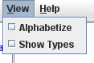

Schemas
The Graph Model
After a project has been fully configured by selecting a schema pair and a mapping, the schema pair and mapping will be displayed in the main Harmony window using three large vertical panes, as follows:
Under the word "Schemas" on each side, each schema is represented by a blue bubble containing a white 'S' followed by the name of the schema. This is the root of the schema presentation.
Following, in blue surrounded by blue parentheses, is the name of the Schema Model (the Harmony graph model) that is being used to display that schema.
An alternate Schema Model may be specified by selecting the blue text and then selecting the desired model from the Select Schema Model dialog, as follows:
The model choices have the following behaviors:
- XML: Layout used to display XML-based schemas.
- XML-NoAttrs: Layout used to display XML-based schemas while excluding their attributes.
- Relational: Treats the graph as consisting of a two level hierarchy of tables and then fields.
- Domain: Layout used to display the domain values of a schema.
- RMap: Specialized layouts used for generating XQuery code between relational schemas.
- RMap - 1 to N: TODO
- RMap - N to 1: TODO
- GSIP: Treats the graph as consisting of a three level hierarchy of entities, attributes, and then individual domain values.
- Complete: Layout attempting to display all components of the schema in as hierarchically concise format as possible.
Schemas in Harmony are displayed as tree graphs. Every row in a Harmony schema pane (either left or right) other than the word "Schemas" is a node in the graph that represents an element in that schema. An element may or may not have contained elements and thus the corresponding node may or may not have dependent child nodes. To the left of every node is an icon representing the type of that node; the root node representing the schema as a whole has a special icon.
Trees are organized according to the Harmony graph model being used. The icon displayed for a node may depend on the choice of graph model. The name of the schema element is displayed with the node icon.
The Harmony View menu may also be used to control the presentation of the graph model using the lower two check-box settings, as seen in the following: 
Checking Alphabetize will always order subordinate nodes using an alphanumeric sort, otherwise the order will be that established when the schema was originally imported into the Harmony data repository. Alphabetization is the default behavior.
Checking Show Types will always display additional information for nodes that are understood by the Harmony data repository to be representing "datatypes".
Controlling Subgraph Visibility
If a node has child nodes, a gray switch icon will be displayed to its left.
- When it is horizontal (closed), all child nodes (and their child nodes, etc.) will be hidden.
- Then it is vertical (open), all child nodes (and their child nodes, etc.) will be displayed.
- Clicking the switch alternates between its two states.
For example, in the following schema display a variety of nodes have different settings:
Selection of a node (either the node icon or the element name) using the right
mouse-button pop-up menu enables setting or deselecting a switch recursively
at all levels below that node[1]. That menu
appears as follows: 
The first choice, Expand All, recursively sets all switches to vertical (open).
The second choice, Collapse All, recursively sets all switches to horizontal (closed).
Selecting Expand All on the root node (schema name) will cause all nodes (schema elements) to be displayed for that schema.
In combination with the horizontal and vertical scroll bars any appropriate section of the schema may be visualized in the Harmony window.
Element Descriptions
Selection of a node (either the node icon or the element name) using the left mouse-button highlights the node and enables the appearance of a simple dialog at the bottom of (but overlying) the schema pane. This dialog displays the description (and possibly datatype) of the schema element. For example:
The content of the dialog may vary depending on the nature of the schema; it always displays the element name in its header.
Selecting the node again will remove the dialog (and the highlight). Selecting a different node will change the dialog content accordingly. A double-click on the dialog header will also close it.
Additionally, all nodes support hover pop-up display of their schema element description.
Element Search
To search for text strings (key words or phrases) within the names and descriptions of elements in a given schema, enter the substring into the Search text-box located below the applicable schema pane and then press "Enter" on the keyboard. For example, using the search string "grain":
All nodes representing schema elements containing that string of characters will be:
- Opened so that they are visible; this may require opening all nodes between the node-of-interest and the root node for that schema.
- Highlighted in dark yellow if the search string appears in the element name.
- Highlighted in light yellow if the search string appears in the element description.
On the adjacent vertical scrollbar, one or more red lines will appear that indicate each of the locations of any matching schema elements which cannot be displayed without scrolling the schema graph display vertically. Search is not case sensitive.
The asterisk wildcard may be used in searches. For example, searching for "new*time" would locate schema elements with the names "NewStartTime", "NewStartingTime", and "NewClosingTime". Schema elements with descriptions containing these substrings would also be located.
There is also a general search capability accessible from the main menu as follows:
The "Search » Clear Results" menu entry removes the search-derived highlighting from all elements in both schemas. The "Search » Search..." menu entry activates the Search dialog, as follows:
Unlike other dialogs in Harmony, this dialog does not grab the GUI focus, therefore it can be left open, dragged out of the way, and used for search while other functions are being performed. By default, searches are performed in both schemas. The results of searches may be used to set element foci for use in subsequent schema matching, or to augment previously set focus areas.
The "Search » Highlight Focus Area" menu entry selection restricts the results of all search to only identified focus areas; "Search » Highlight All" is the default behavior and results in all matched schema elements being highlighted regardless of the setting of focus areas. The use of focus areas is described in Narrowing the Match Space.
Footnotes
1. The other menu entries are explained as part of the discussion of schema element matching.